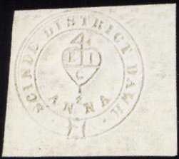
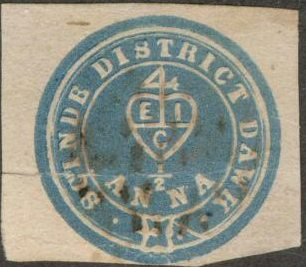
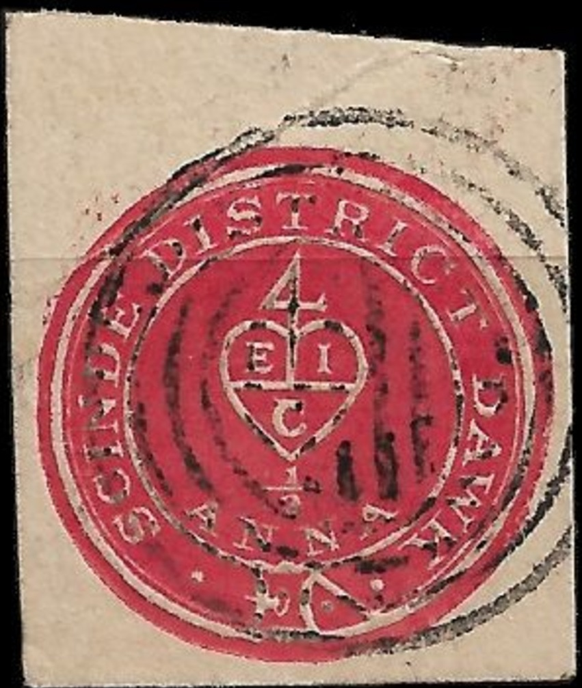

{kind=link}

Note: on my website many of the
pictures can not be seen! They are of course present in the
catalogue;
contact me if you want to purchase it.


1/2 a red embossed 1/2 a white (embossed) 1/2 a blue
All the above shown stamps are genuine. The red stamp was issued first and was probably printed individually. The embossed stamp came next followed by the blue stamp. However, the blue stamp was only used for a limited period of time. These stamps were the first stamps to be issued in India. More information on these stamps can be found on: http://www.geocities.com/mjshah.geo/scinde/scinde2.html. 12 different kinds of postmarks are known, for more information on postmarks see the website: http://www.geocities.com/mjshah.geo/scinde/postmark.html.
Value of the stamps |
|||
vc = very common c = common * = not so common ** = uncommon |
*** = very uncommon R = rare RR = very rare RRR = extremely rare |
||
| Value | Unused | Used | Remarks |
| 1/2 a red | RRR | RRR | |
| 1/2 a white | RRR | RR | |
| 1/2 a blue | RRR | RR | |
Examples of forgeries:
(The above forgeries have the coloured outer part too big and
inscription 'ETC' instead of 'EIC')
This forgery has the buckle completely different from a genuine
stamp (it doesn't even touch the white line above it). This might
be the forgery "a)" described in the Serrane guide

These forgeries have the "4" much thinner than in the
genuine stamps. I've also seen the blue stamp without cancel.
Another set of forgeries.
Four somewhat more convincing forgeries printed on a piece of old
paper.
I have my doubts about the next stamps:
{kind=link}